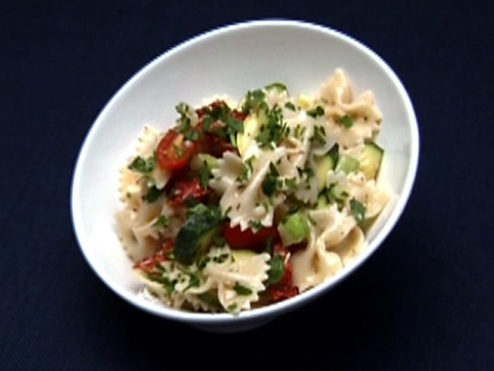

Pasta Salad

Pasta salad (pasta fredda) is a salad dish prepared with one or more types of pasta, almost always chilled, and most often tossed in a vinegar, oil, or mayonnaise-based dressing. It is typically served as an appetizer, side dish or a main course. Pasta salad is often regarded as a spring or summertime meal, but it can be served any time of year.
Ingredients
Salad
- 1 pound farfalle pasta
- Freshly ground black pepper
- 1 tablespoon olive oil
- 1 yellow squash, sliced into 1/4-inch thick discs
- 1 zucchini squash, sliced into 1/4-inch thick discs
- 1 cup diced sun-dried tomatoes
- 1 cup packed fresh basil leaves
- 1/2 cup fresh packed parsley leaves
Dressing
- 2 tablespoons apple cider vinegar
- 2 garlic cloves, lightly crushed with the side of a knife blade, and quartered
- 1 teaspoon stone ground mustard
- 1 teaspoon dried oregano
- 1 teaspoon dried basil
- 1/2 teaspoon salt
- 1/8 teaspoon ground black pepper
- 1/2 cup extra-virgin olive oil
Steps
- Boil the pasta in salted water until al dente and drain well. Toss with ground black pepper and olive oil.
- For the dressing, add the vinegar to a blender and replace the lid. Turn on the blender add, 1 at a time through the feed opening, garlic, mustard, oregano, basil, salt, and black pepper. Leaving the blender running, add the olive oil in a slow thin stream.
- Toss together the pasta, yellow squash, zucchini, sun-dried tomatoes, basil and parsley with enough of the dressing to coat. Serve any additional dressing on the side.